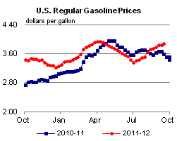
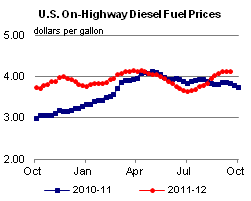
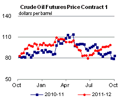
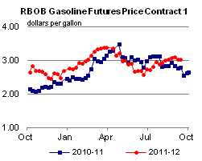
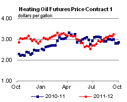
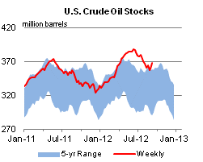
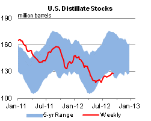
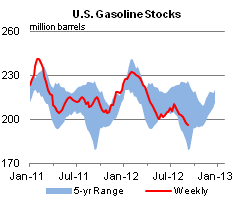
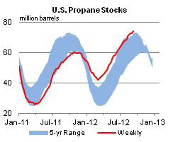

Released: September 19, 2012
Next Release: September 26, 2012
Crude Oil Market Volatility
There are two commonly referenced measures of market price uncertainty: historical volatility and implied volatility. Historical volatility measures how much prices have varied in the past, and implied volatility uses options prices to measure how market participants believe prices will vary in the future. In the Brent crude oil market, implied volatility is currently higher than historical volatility because of continuing market uncertainties (Figure 1). Implied volatility is expected to remain high until these uncertainties are resolved.
{kind=link}
Historical volatility is calculated from the daily price movements of the front month futures price, typically for a 30-day period. It provides a snapshot of the magnitude of recent up-and-down price movements, but by definition is a backwards-looking metric.
Implied volatility is calculated from the prices of call and put options traded on futures contracts. The Black-Scholes option pricing model is widely used to price crude oil futures options based on a number of factors: the current trading price of the crude oil futures contract; the strike price of the option contract; the time until the option contract expires; and the expected future volatility of the price of the underlying crude oil futures contract. The only one of these variables that is not immediately observable is expected future volatility. By using the Black-Scholes option pricing model and the known values of the crude oil futures contract, the strike price of the option, the time until the option expires and the current trading price of the option contract, it is possible to calculate the future volatility that is implied by the relationship of the known values, hence "implied volatility."
Historical and implied volatility can diverge when expectations about future price movements differ from recently observed price trends. Historical volatility increased in late June and early July reflecting the rapid drop in crude prices before July 1 and the rapid increase after July 1. Since that time, Brent futures prices have traded in a relatively narrow range, because there have been few significant surprises in crude oil markets over the past month, and historical volatility has reverted to its level over the March-through-May period. Implied volatility did not spike along with historical volatility, implying that market participants did not change their view of longer-term risks, despite the short-term price changes. As the sudden price changes during the middle of the year dropped out of the historical volatility calculation, the two volatility measures returned to their earlier relationship.
Over the last four weeks, economic data, policy actions, and oil market balances have generally been consistent with market expectations. The period began with hopes of stimuli from governments and central banks around the world that improved expectations for economic growth and increased oil prices. More recently, the European Central Bank announced details for a new bond-buying program. In addition, the Chinese government formalized plans for $157 billion in infrastructure-improvement spending, and as many analysts had expected, the U.S. Federal Reserve System announced a new round of treasury bond and mortgage-backed security purchases, otherwise known as quantitative easing, at the conclusion of the September 12-13 meeting of its Federal Open Market Committee. After moving higher on improved expectations for economic growth through mid-August, crude oil prices settled into a narrow trading range. That trading range has persisted, causing the decline in historical volatility during the second half of August and the first half of September, with historical volatility reaching a 2012 low on September 13.
While historical volatility has declined sharply, implied volatility has fallen only slightly and more gradually on perceptions that geopolitical, technical, and economic risks to future market conditions are largely unchanged. Uncertainty about Iran's nuclear ambitions and surprise production outages from outside of the Organization of the Petroleum Exporting Countries (OPEC) are sources of potential upside price risk. A slowdown in China's economic growth and fears over the stability of the euro, even with the recent government and central bank interventions, pose potential downside risks to future crude oil prices. As a result, the market's expectation about future crude oil price volatility has remained relatively high despite the recent downward trend in historical volatility.
Gasoline and diesel fuel prices increase again
The U.S. average retail price of regular gasoline increased about three cents last week to $3.88 per gallon, 28 cents per gallon higher than last year at this time. The largest increase came in the Rocky Mountain region, where the average price rose more than seven cents to $3.77 per gallon. The East Coast price added more than a nickel to reach $3.88 per gallon. In the Midwest, the average price increased more than three cents to $3.89 per gallon. The Gulf Coast price was up more than one cent to $3.66 per gallon. Moving in the opposite direction, the West Coast price shed almost a penny, but remains the highest average price in the country at $4.07 per gallon.
The national average diesel fuel price increased three-tenths of a cent to $4.14 per gallon, 30 cents per gallon higher than last year at this time. The largest increase came in the Rocky Mountain region, where the price increased more than one cent to $4.26 per gallon. The East Coast price was also up more than a penny, to $4.13 per gallon. On the Gulf Coast, the average price added almost a penny to $4.03 per gallon. The Midwest diesel price was almost flat for the week, remaining at $4.08 per gallon. The West Coast saw the only decrease for the week, with its average price falling more than two cents to $4.40 per gallon.
Propane inventories show a large build last week
Last week, propane stocks experienced a large late-season build, adding 1.3 million barrels to end at 74.0 million barrels, 8.7 million barrels (34 per cent) higher than the same week last year. Big gains happened in the Midwest and Gulf Coast regions, which grew by 0.6 and 0.5 million barrels respectively. The East Coast and Rocky Mountain/West coast regions each added 0.1 million barrels to their total stocks. Propylene non-fuel-use inventories represented 6.4 percent of total propane inventories.
Text from the previous editions of This Week In Petroleum is accessible through a link at the top right-hand corner of this page.
|  |  | ||||||
| Retail Data | Change From Last | Retail Data | Change From Last | ||||
| 09/17/12 | Week | Year | 09/17/12 | Week | Year | ||
| Gasoline | 3.878 | Diesel Fuel | 4.135 | ||||
|  |  | ||||||||||||||||||||||||||
|
 | ||||||||||||||||||||||||||
| *Note: Crude Oil Price in Dollars per Barrel. | |||||||||||||||||||||||||||
|  |  | ||||||
|  |  | ||||||
| Stocks Data | Change From Last | Stocks Data | Change From Last | ||||
| 09/14/12 | Week | Year | 09/14/12 | Week | Year | ||
| Crude Oil | 367.6 | Distillate | 128.2 | ||||
| Gasoline | 196.3 | Propane | 74.017 | ||||